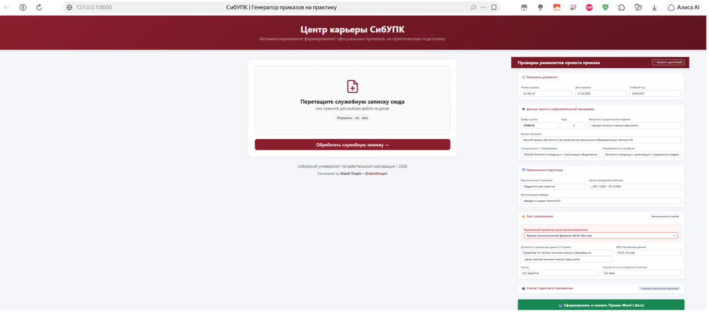
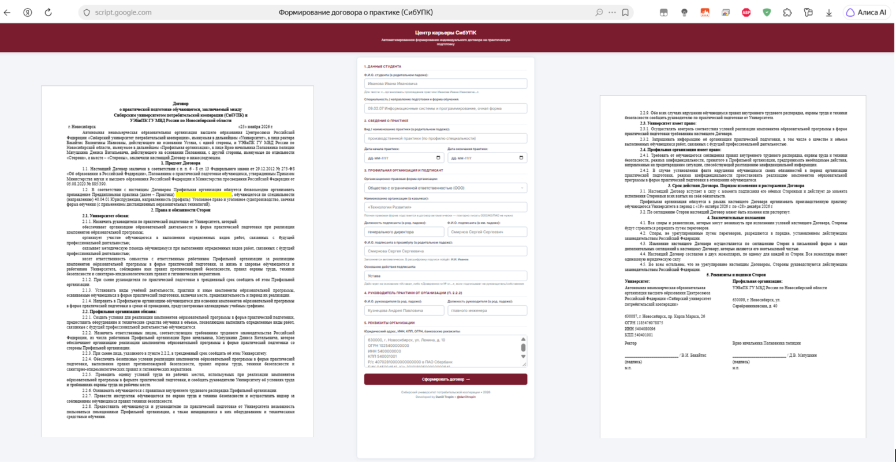
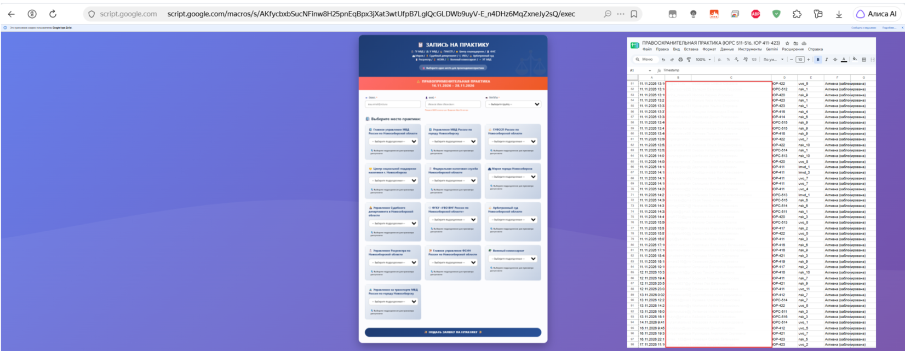
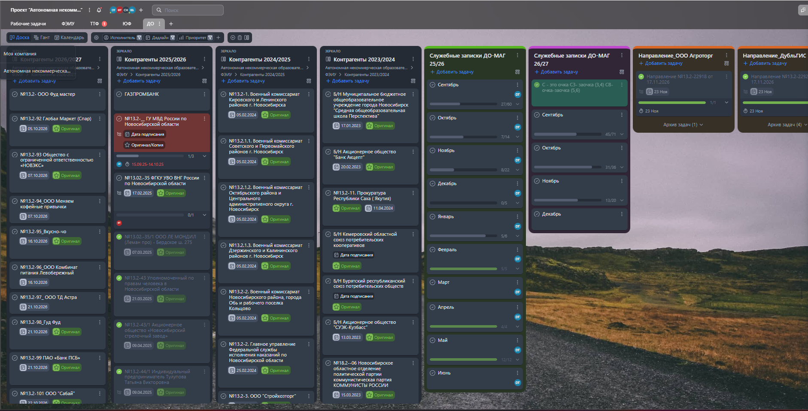
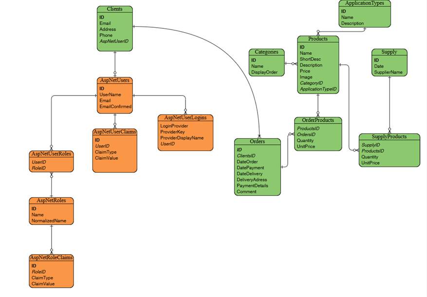
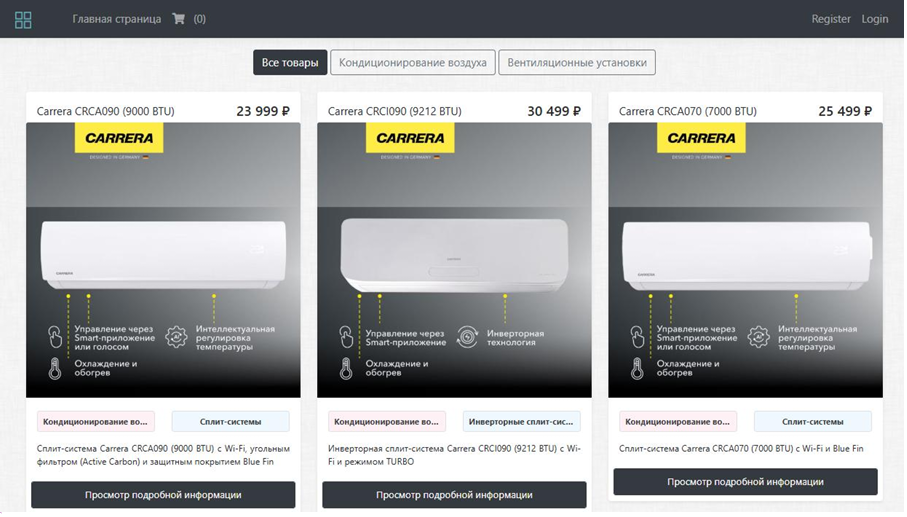
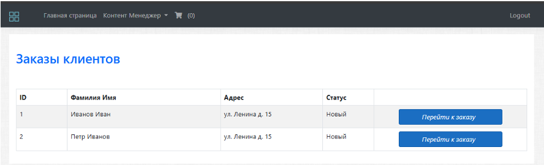

Специалист с профильным IT-образованием («Прикладная информатика») и опытом удалённой работы более 3 лет.
Нахожу узкие места в ручных процессах, формализую требования (ТЗ, ER-модели, регламенты), координирую смежные подразделения и подрядчиков, а при необходимости сам собираю рабочие веб-инструменты автоматизации.
3 веб-сервиса
в эксплуатации (до 1 000 пользователей за цикл)
0 потерь
договоров и задач после внедрения YouGile
до 6–7 тыс./мес
верифицированных B2B-лидов через SQL-парсер
-30% дублей
после очистки и фильтрации клиентской базы
Реализованные рабочие кейсы
Аналитик процессов / Разработчик автоматизацииСибУПК • Центр карьеры • Продакшен
Цифровизация документооборота и распределения практик (3 веб-сервиса)
Бизнес-проблема (AS-IS)
Ключевые операции отдела выполнялись вручную: оформление одного приказа на практику занимало от 1 до 60 минут ручной правки,
на проверку каждого индивидуального договора уходило 1–3 минуты из-за частых ошибок в падежах и реквизитах,
а запись студентов на площадки шла через почту, таблицы и мессенджеры с дублями и превышением квот.
Что сделано
Сервис генерации приказов: реализовал веб-инструмент загрузки служебных записок в формате .xls/.xlsx с автоматическим формированием готового официального приказа.
Сервис генерации индивидуальных договоров: спроектировал 5-блочную веб-форму с автоподстановкой правовой формы, склонением ФИО/должностей и сборкой документа без ошибок.
Портал записи на практику: разработал форму распределения по 13 государственным и муниципальным площадкам (МВД, ФНС, Мэрия, Арбитражный суд и др.) с проверкой доступности подразделений, лимитами мест и блокировкой дублей.
Обучил сотрудников работе с инструментами и сопровождаю сервисы в эксплуатации.
Результат (TO-BE):
Приказы: 3 сотрудника выпускают 30–60 приказов/мес в пару кликов вместо ручной правки до 1 часа на документ.
Договоры: ~1 000 студентов каждые 2–3 месяца формируют готовые договоры; отдел полностью отказался от ручной проверки (экономия ~17–50 часов за цикл).
Запись на практику: 200–300 заявок за поток обрабатываются автоматически без дублей и перебора квот.

Сервис формирования приказов из .xls/.xlsx

Веб-форма генерации индивидуальных договоров

Портал записи на 13 площадок с контролем квот
IT-координатор / Руководитель внедренияСибУПК • Команда 4 сотрудника • Продакшен
Внедрение YouGile и оцифровка документооборота отдела
Бизнес-проблема (AS-IS)
Договоры с организациями-партнёрами, контакты контрагентов и отложенные задачи с горизонтом исполнения до полугода хранились разрозненно.
Статус подписания документов было сложно отследить, возникали потери договоров и срывы по долгосрочным поручениям.
Что сделано
Спроектировал архитектуру рабочего пространства в YouGile с разделением по доскам факультетов и подразделений (ФЭИУ, ТТФ, ЮФ, ДО).
Настроил сквозную систему учёта контрагентов через зеркальные колонки по учебным годам (2023–2027) с привязкой сканов договоров, контактов и стикеров статусов («Оригинал / Копия», «Дата подписания»).
Выстроил помесячный трекинг служебных записок и направлений через чек-листы подзадач (до 70+ позиций в карточке) и контроль сроков.
Закрепил регламенты ведения карточек и провёл обучение команды из 4 сотрудников.
Результат (TO-BE):
полностью прекратились потери договоров и отложенных задач (горизонт до 6 месяцев); вся цепочка движения документооборота и статусов по контрагентам стала прозрачной для всей команды.

Обезличенная доска YouGile: зеркальные колонки по годам, стикеры статусов, подзадачи (клик для увеличения)
Бизнес-аналитик / Архитектор MVPООО «Инженерное Бюро» • Удалённо
Проектирование и MVP веб-платформы онлайн-заказов оборудования
Бизнес-проблема (AS-IS)
Заявки на вентиляционное и климатическое оборудование принимались по телефону, почте и на встречах, после чего вручную переносились в таск-трекер.
Ручной ввод и централизованные согласования через административный отдел вызывали ошибки в позициях и задержки в передаче заказов в производство.
Что сделано
Провёл обследование оргструктуры и процесса приёма заявок, формализовал целевой флоу клиентского заказа.
Провёл сравнительный анализ готовых CMS/CRM-решений и обосновал кастомную разработку под будущий инженерный калькулятор и учёт технических параметров оборудования.
Спроектировал концептуальную и логическую ER-модель базы данных (14 сущностей в нотации Мартина с ролевой моделью ASP.NET Identity).
Реализовал рабочий прототип на ASP.NET Core MVC (каталог, AJAX-фильтрация без перезагрузки, авторизация по ролям, корзина, оформление заявки и панель администратора) и провёл демонстрацию сотрудникам компании.
Результат (TO-BE):
подготовлена проверенная архитектура БД, рабочий MVP-прототип и дорожная карта дальнейшего развития (калькулятор расчёта, платёжный шлюз, мобильная версия), переданные команде для следующего этапа.

Логическая ER-модель БД (14 сущностей)

Интерфейс каталога с AJAX-фильтрацией

Панель администратора: список и статусы заказов
Специалист по данным и автоматизацииРИА «Еврозвук» • Удалённо
Автоматизация сбора и очистки B2B-базы клиентов
Бизнес-проблема (AS-IS)
Отделу розничных и B2B-продаж требовался стабильный поток контактов неохваченных компаний, при этом существующая клиентская база содержала большое количество дублей,
что искажало статусы сделок и приводило к повторным прозвонам одних и тех же контрагентов.
Что сделано
Написал скрипт-парсер для автоматического сбора карточек неохваченных B2B-компаний (название, адрес, телефон).
Реализовал проверку входящих записей на дубли через SQL-базу данных до загрузки в рабочую воронку.
Провёл аудит и очистку текущей базы клиентов, настроил правила фильтрации и сегментации запросов при потоке 60–80 лидов в неделю.
Результат (TO-BE):
обеспечен приток 150–300 верифицированных лидов в день (до 6–7 тыс. записей в месяц) без ручного поиска; доля дублей в существующей базе снижена на 30%.
Инициативные проекты (Pet-проекты)
Pet-проект / ПрототипИнициативная разработка
Прототип Telegram-бота для онбординга и тестирования сотрудников
Идея и задача
Проработка MVP-решения для сетевых компаний, которым требуется автоматизировать выдачу учебных материалов и проверку знаний новичков прямо в Telegram без внедрения тяжёлых LMS-платформ.